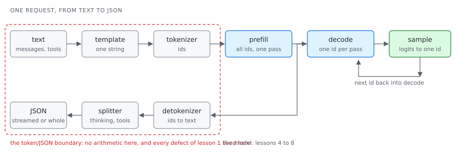
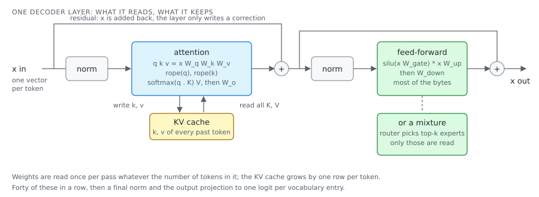
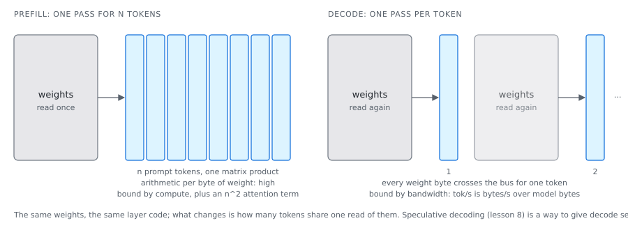
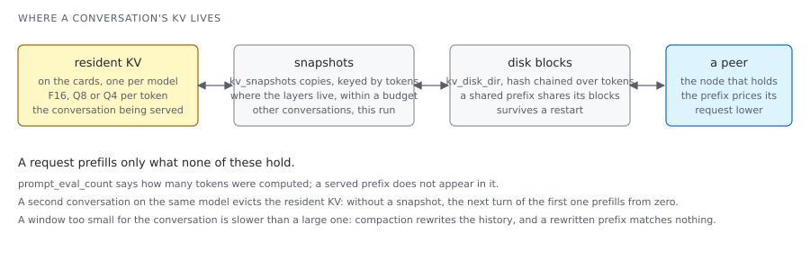
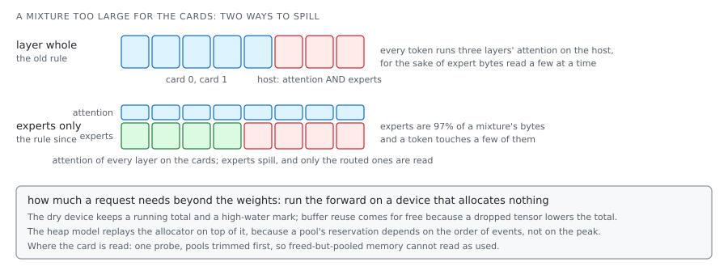

loken / docs / learn
The fundamentals of inference
Ten lessons, as experimented in one engine over nine months. Each slide states one
thing; the lesson it comes from carries the files, the method and the exercise.
Arrow keys to move. Every figure carries the date and the machine it came from.
One request
From text to JSON, and back

The model is the middle: prefill, decode, sample. The two ends do no arithmetic, and that
is where the defects were.
Lesson 1
Text becomes ids, ids become text
- A tokenizer is a fixed table of about 150 000 strings and a cutting rule (byte-pair merges,
or a unigram model). It ships with the checkpoint.
- Special tokens have ids and no text: turn markers, the start of a reasoning block. Whether a
decoder shows or drops them is a decision.
- A chat template, a small Jinja program in the checkpoint, turns messages into the one string
the model was trained on.
- On the way back the text is split into answer, reasoning and tool call. None of it is
arithmetic, and it can fail without an error.
Lesson 1, measured (2026-09-12)
Four defects, none in the arithmetic
| Defect | Reach |
|---|
a bare thought at the head of every answer | gemma4 31b, 26b |
reasoning delivered as the answer, thinking empty | 19 of 44 models scanned |
| the template failed to render; a fallback rendered instead | falcon3, granite, llama3.2 |
| a tool call lost | qwen3, granite |
None moved a token rate. The campaigns measured speed and a coherence gate on the first
120 characters. A warning was logged on every failed render.
These warnings failed no test.
Lesson 2
What a model file holds
- A GGUF is a header, metadata pairs (architecture, layer count, trained context, the whole
tokenizer), one descriptor per tensor, then the aligned payload.
- Nothing is copied at open: the file is memory-mapped, and its
pages are read on demand.
- qwen3:0.6b: 751 632 384 parameters, 28 layers, width 1024, trained at 40 960 tokens, 522 MB
resident at Q4_K_M, which is 5.6 bits a parameter.
Measured 2026-09-08: 44 headers total 326 MB, 197 MB of it vocabularies, 11 s to
read. Stopping at the first tokenizer.* key: under 8 KB a file, 2 ms for all 44.
Lesson 3
Fewer bits per weight
| Format | Block | Bytes | Bits a weight |
|---|
| Q4_0 | 32 values, one 16-bit scale | 18 | 4.5 |
| Q8_0 | 32 values, one 16-bit scale | 34 | 8.5 |
| Q4_K | 256 values, 8 sub-scales and minimums | 144 | 4.5 |
| Q6_K | 256 values, 16 sub-scales | 210 | 6.56 |
| IQ2_XXS | 256 values as codebook indices | 66 | 2.06 |
| fp8, fp4 | the checkpoint's own tile scales | | 8, 4 |
The decision in every format is the scale: the block's extreme over the top level is a
starting point, and every quantiser searches for one that loses less. The matmul then works
in integers: activations at eight bits, integer dot products, two scales applied at the end.
Lesson 3, measured (2026-09-13 to 16)
Judge by the output, verify against the source
- Re-quantising on the card: the speed came from parallelism, not the card. A card-made
file has a stable digest distinct from the host-made one, by design (reduction order).
- A better file than the published ones at the same size for the 552B mixture: KL 0.139
against 0.169, top-1 0.717 against 0.674. The lever was error compensation, a third off the
gate and up error.
- A published file whose attention had lost its fp8 scales (cosine 0.39): no engine could
make it speak. A converter that wrote codes column-wise, verified against the cache that
already carried the defect.
Lesson 4
One layer, then forty of them

Lesson 4, measured (2026-09-12 to 14)
Judging a port
- The authors' reference, unmodified, on the CPU: its kernel module shadowed by a pure-torch
one. Each phase dumps its vectors; a test replays the phase.
- Two pitfalls, finite and wrong: a rotary table cast to fp32 loses its imaginary half; a
lazy closure served every expert from the last layer.
- A mixture routes per token: one borderline token flips to another expert and moves the
block's relative L2 from 1e-2 to 6e-2 while cosine stays at 0.998. Gate on cosine plus a
bounded count of divergent tokens; gate the pre-routing stages tightly on their own.
Lesson 5
Two regimes, one model

qwen3:0.6b on an RTX 5070 Ti: 1 782 tokens prefilled in 50 ms; about 730 tokens a second
decoded. A 70B with 26 of 80 layers on the host: 1.5 a second, the host's 36 GB/s.
Lesson 5, measured (2026-09-11, qwen3-coder 30b-a3b)
Where a long prefill's time goes
| build | prefill(n), ms | 131 072 tokens |
|---|
| before | 1.369 n + 1.655e-4 n^2 | 50.4 min |
| after | 1.372 n + 2.048e-5 n^2 | 8.9 min |
Attention band by band with a running maximum, six passes fused into one, the host-built
causal mask gone. The linear term did not move: experts 76%, attention 21%, router 1.6%.
Rejected the same day: a scalar flash-attention kernel (83.6 s against 26.8),
prefill through the tensor-core expert path, a chunk of 2 048. And the streamed log had
counted the prompt in words: every streamed figure read twice as slow.
Lesson 6
What the model remembers between tokens

qwen3:0.6b keeps 112 KB a token at F16; a 4 096-token window is 460 MB, close to the
weights. The cache is state, and a server that keeps it prefills only what is new.
Lesson 6, measured (2026-09-06 and 11)
What the cache holds between steps
- Snapshots: an alternated turn prefills 1 100 tokens instead of 5 195 on gemma4; Q8 restores
bit-identical, Q4 within one step; the disk tier survives a restart.
- Three bits through a Hadamard rotation: beats F16, loses to the 4-bit cache already here
by under 0.5%. Measured and refused.
- One live cache per model: an agent's background read on the same model re-prefilled every
step, 137 s where a reuse costs 1.2 s.
- A window too small is slower: 301 s at 32 768 tokens against 24 s at 131 072.
Lesson 7
From logits to a token
- Temperature, then the candidate cut (top-k, top-p, min-p), a repetition penalty, a bias,
then one draw. Greedy is the case with one candidate.
- Constrained decoding is a mask on the row: a schema says which tokens may continue.
- Determinism is a property of the whole path. Greedy on the same logits gives the same
token; the same logits need the same arithmetic in the same order.
Reuse of a cached prefix is rounded down to a prefill chunk for that reason: off
a boundary the tail runs shapes the cold run never used, and a near-tie flips.
Lesson 7, measured (2026-09-12)
A greedy decode that did not repeat itself
128, 80, 80
Three iterations of one greedy cell on one engine. The campaign published a mean of 96
tokens against 128 and blanked the comparison, which was right. A decode that should repeat exactly showed a spread wide enough to notice.
Lesson 8
More than one token per weight read
- A drafter proposes k tokens; the target verifies them in one pass that reads the weights
once. The first disagreement is replaced, the rest dropped; the output is the target's own.
- Drafts from a small model of the same family, from a trained head on the target's hidden
state (EAGLE), or from the prompt's own n-grams.
- It pays where verification is far cheaper than generation: a model that spills crosses the
bus once for k tokens. On a model that fits, verification costs what drafting saves.
Lesson 8, measured (2026-09-03)
One pair, on a spilled target
1.49 to 2.21 tok/s
deepseek-r1:70b with 26 of 80 layers on the host, llama3.2:1b drafting: 41.0 J a token
against 51.8, the same answer token for token, 18% of drafts accepted. A better-matched
drafter would accept more.
Two speculative loops exist, 1.68 against 2.21 on the same pair. One should go;
the measurement says which.
Lesson 9
Fitting a model on the machine you have

Lesson 9, measured
Cards, host, disk, the other machine
- Spill the experts, not the layer (2026-09-03): qwen3next 15.6 to 34.7 tok/s, ollama at 33.
Experts are 97% of a mixture's bytes and a token touches a few.
- A 552B mixture on a 440 MB/s USB disk (2026-09-14 to 17): 32% of a token's experts were the
previous token's; a managed hot tier bought 2% of the time, the kernel's page cache already
does it;
MADV_RANDOM cut the read rate from 342 to 46 MB/s; a 1 024-token prompt
reads 141.6 GB in 348 s against a 320 s disk floor.
- Two nodes (2026-09-13): 554 requests served locally, 0 forwarded. The router was right; the
fast card drains its queue faster than a hop.
Lesson 10
Measuring without fooling yourself
- Measure from the client, the same way for every engine. The engines' own prefill rates
reversed three cells of four (652 reported where 35 was implied).
- Take the median. A mean over three iterations, one of them the cold load, published 11.4
for a model that decodes at 15.2.
- Publish the token count beside the rate. Say which build, machine and day.
- Profile a representative slice before a run of hours. Let nothing else run: a build on
twenty threads took a cell from 2.15 to 1.58 tok/s.
- Read the whole answer: a gate on 120 characters scored 0.870 on an answer that scores 0.139.
The thread
Every defect was invisible to the measurement in place
- a coherence gate that read 120 characters
- a prompt counted in words
- a token rate, where the answer was in the wrong field
- a sweep under eviction pressure
- a verification against a cache that already carried the defect
- a warning nobody acted on
The fix each time was a measurement that could see the defect, not a faster kernel.
Where to read next
The lessons, and what they point to
docs/learn/: the ten lessons, each with its files and its exercise.docs/STATUS.md: what is measured, what is slower, what is written and wired to nothing.docs/BENCHMARKS.md: the protocol, and why the two rate columns are the client's.docs/CLUSTER.md: the cost model across machines.cuda/marlin/DESIGN.md: a 4-bit tensor-core GEMM, explained as a design.